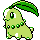

#152
Chikorita
Grass
Abilities: Serene Grace, Overgrow
Base stats BST 318
HP45
Attack49
Defense65
Speed45
Sp. Atk49
Sp. Def65
Evolution
dbbw EVOLVE_LEVEL, 16, BAYLEEFLevel-up learnset
LevelMoveType
Lv. 1GrowlNormal
Lv. 1TackleNormal
Lv. 5Razor LeafGrass
Lv. 8PoisonpowderPoison
Lv. 11SynthesisGrass
Lv. 17Light ScreenPsychic
Lv. 17ReflectPsychic
Lv. 20Draining KissFairy
Lv. 23Energy BallGrass
Lv. 23Leech SeedGrass
Lv. 26Sweet ScentNormal
Lv. 29Body SlamNormal
Lv. 32MoonblastFairy
Lv. 35SafeguardNormal
Lv. 41SolarbeamGrass
Lv. 42Giga DrainGrass